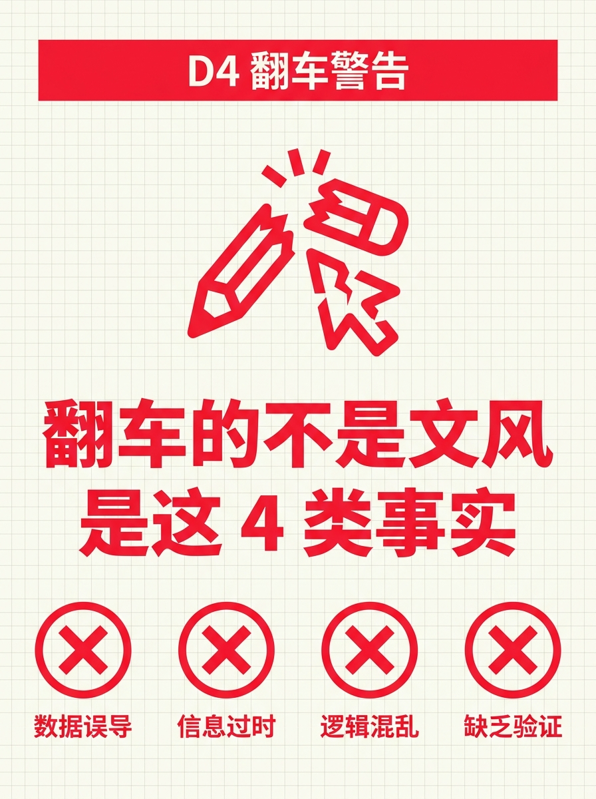
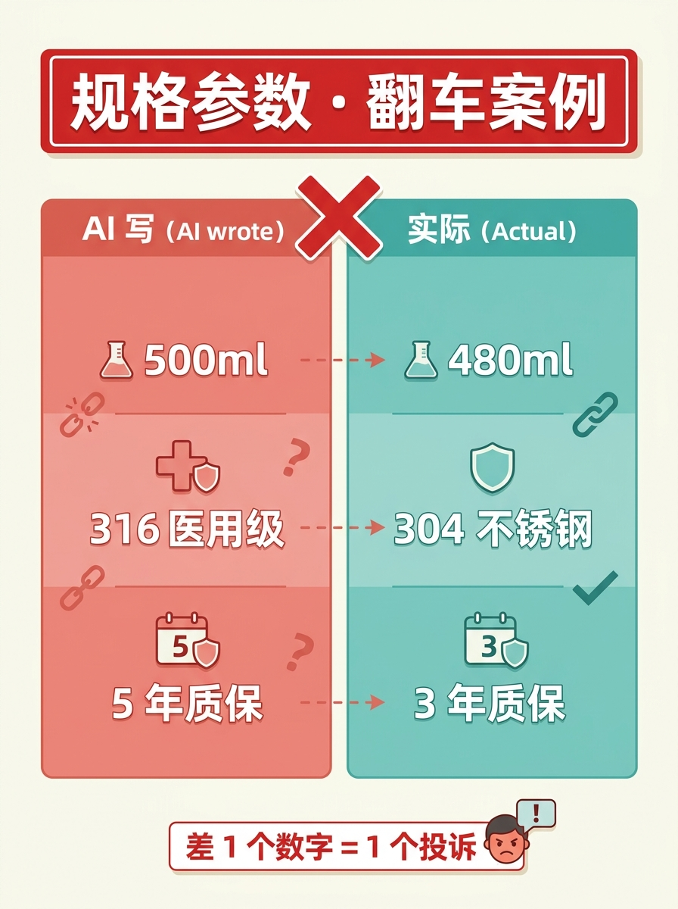
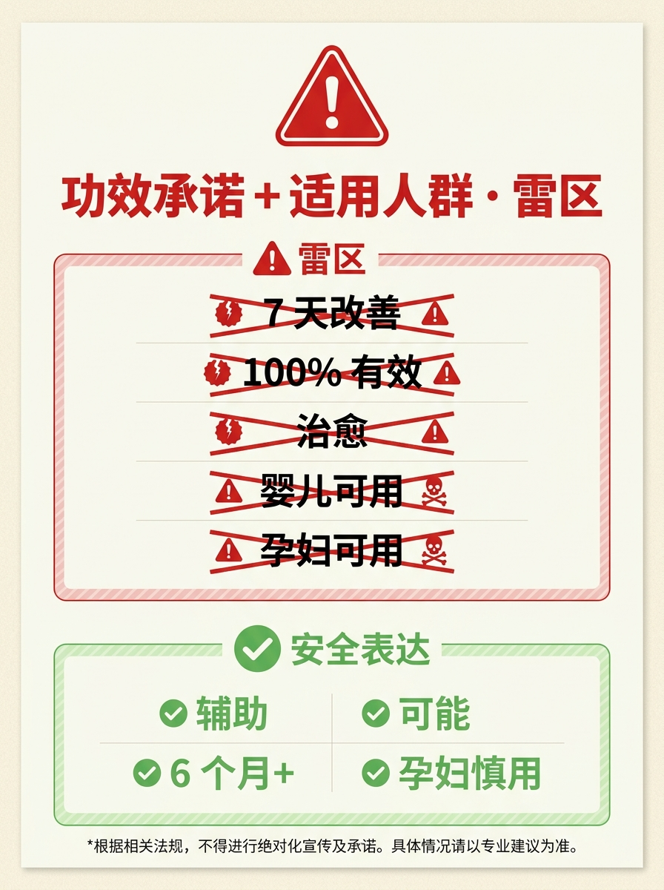

使用说明：D4 是横评对比型：4 类必查事实（规格/功效/人群/价格）+ 1 个程序员视角洞察。
配图 06 是 D5 预告，发布前可删。






AI 写商品文案 · 先查这 4 类事实 · 别被翻车
D3 跑完 3 个生图工具横评，我以为最该补的是"图"。 但前两天一个客户私聊问： "你详情页写 304 不锈钢， 商品文案怎么变成 316 医用级了？" 那一刻我意识到—— AI 文案翻车的不是文风，是 4 类事实。 ───── 4 类必查事实 ───── ❶ 规格参数 容量 / 尺寸 / 重量 / 材质 AI 写 "500ml" 实际是 480ml = 投诉 AI 写 "316 医用级" 实际 304 = 虚假宣传 ❷ 功效承诺 "7 天改善" "100% 有效" "治愈" = 雷区 涉医/涉美/涉保健：必须人工 + 资质 ❸ 适用人群 "婴儿可用" 实际 "6 个月+" "孕妇可用" 实际 "孕妇慎用" 漏写禁忌 = 法律风险 ❹ 价格和活动 优惠券过期、库存没了、活动已结束 "满 199 减 50" 实际 "满 299 减 30" 下单对不上 = 差评 ───── 我现在的 SOP ───── ✅ AI 写完，复制到 4 项检查表 ✅ 每项对照原始资料 ✅ "治愈" "根治" "100%" → 改 "辅助" "可能" ✅ "限时" "最后 X 天" → 改 "以页面为准" ✅ 5 分钟检查 = 省 1-3 个月流量损失 ───── 程序员视角 1 个洞察 ───── **AI = 高速打字机，不是事实来源。** 事实责任永远在人。 工具只提高初稿速度， Fact-check 才是商品文案的"测试用例"。 ───── Day 5 预告 ───── W2 第 3 天 · 程序员做电商的真正优势 把"凭感觉"变成"可重复"的 3 个方法 评论区问：你被 AI 写错过最离谱的是什么？ 我整理 10 个真实翻车案例，下篇送 👇 关注我，看 30 天跑完我会得出什么结论 🌱
#前端转AI电商
#AI电商
#电商文案
#AI避坑
#factcheck
♡ 收藏
💬 评论
↗ 分享
📋 一键复制
📊 D4 数据复盘
正文长度： 757 字（XHS 上限 1000，留 243 字给评论互动）
配图数量： 6 张（封面 1 + 4 类事实图 4 + Day5 预告 1）
核心钩子： "304 变 316" 真实翻车案例（共鸣型，比纯说理强 10 倍）
事实来源：
content-kit/模板检查表.md（4 项必查事实）+ 5 个高危雷区
🚀 发布前 15 分钟 SOP
- 打开小红书 App → 创建笔记
- 选 6 张图（封面 1 + 内页 5），按顺序排好
- 选 3:4 竖图
- 标题：AI 写商品文案 · 先查这 4 类事实 · 别被翻车
- 正文：点"复制正文"按钮粘贴
- 加 5 个标签
- 选发布时间：周六 20:00-21:00（D4 是周六，避开周日低活跃）
- 发布
📈 发布后 24 小时 SOP
| 时间 | 动作 | 目标 |
|---|---|---|
| 10 分钟 | 自己评论扣 1（"评论区留言你翻车最离谱的，整理 10 个下篇送"） | 引导互动 |
| 30 分钟 | 每条评论都认真回复（重点接住翻车案例） | 活跃感 |
| 2 小时 | 截图保存首日数据 | 复盘素材 |
| 6 小时 | 看一次数据：曝光/点赞/收藏 | 判断是否需要二次推 |
| 24 小时 | 翻车案例汇总（评论 + 私信）→ 准备 D5 资料 | D5 预告内容池 |
🎯 Day 4 数据目标
| 指标 | 目标 | 备注 |
|---|---|---|
| 曝光 | ≥ 1000 | 干货型横评，搜索流量占比高 |
| 收藏率 | ≥ 8% | checklist 天然高收藏（用户存下来用） |
| 评论 | ≥ 60 | 翻车案例钩子强，评论数应该高 |
| 涨粉 | ≥ 80 | 干货粉精准 |
| D5 钩子 | 收集 ≥ 10 个翻车案例 | 决定 D5 资料包内容 |
💡 关键设计点
1. 标题 = 4 维钩子
- AI 写 = 痛点代入（做电商的人都被 AI 坑过）
- 4 类事实 = 数字具体（不是"几类"是"4 类"）
- 先查 = 解决方案导向
- 别被翻车 = 恐惧型钩子（损失厌恶）
2. 正文 = 真实案例 + 4 类清单 + 程序员洞察
- 真实案例（"304 变 316"）= 钩子 + 信任
- 4 类清单（每类 2-3 行例子）= 主体（实用）
- SOP（5 行 checklist）= 拿走价值
- 程序员视角（"AI = 高速打字机"）= 差异化
3. 配图 = 6 张分布
- 01 封面：红 X 章 + "4 项必查" 大字
- 02 翻车：红色警告 + 4 个红叉
- 03 4 类事实：2×2 网格（4 个分类）
- 04 规格参数：左红右绿 AI 写 vs 实际
- 05 雷区：红叉清单 + 安全表达
- 06 Day5 预告
4. 评论钩子 = "你翻车最离谱的是什么"
- 问题型钩子（vs D3 的"猜数字"）
- 承诺回报（下篇送资料包）= 双重激励
- 降低门槛（写 1 句话就行）= 提升评论率
⚠️ 注意事项
- 图 06 是 D5 预告——发布前可删（D4 用 5 张图也行）
- "304 变 316" 是真实案例——不要改具体数字（来自模板检查表）
- 4 类顺序固定：规格 → 功效 → 人群 → 价格（从最常见到最隐蔽）
- 5 个标签最后一个是
#factcheck——蹭搜索词 - 互动钩子在文末——不要插在中间（XHS 习惯）